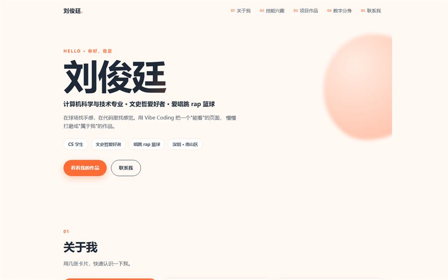
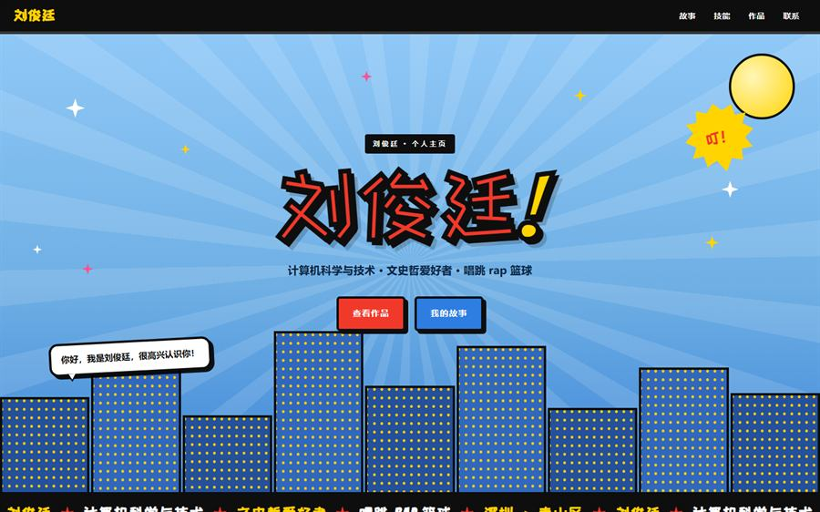
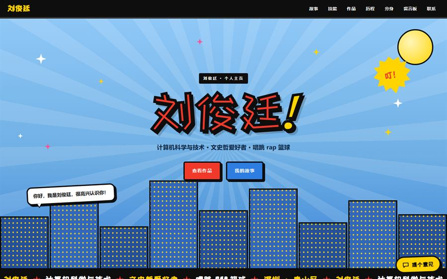

大家好，我是刘俊廷，计算机科学与技术专业。
故事，从一行代码开始：
三个格子，先把我讲给你听。
课堂之外我还喜欢打球，听歌，观看纪录片
最近在读文史哲，越读越上头。
你好，我是刘俊廷，很高兴认识你！
三个格子，先把我讲给你听。
大家好，我是刘俊廷，计算机科学与技术专业。
课堂之外我还喜欢打球，听歌，观看纪录片
最近在读文史哲，越读越上头。
技术让我做出东西，爱好让我愿意一直做下去。
有空就去球场投几个，运动让脑子更清醒。
练习室和球场一样，都是我的舞台。
喜欢顺着一个问题，读上一下午。
和 AI 一起，把想法快速变成能跑的页面。
广东 · 深圳 · 南山区。
作品还在陆续补上，先把已经做好的放这里。
这个站本身就是作品：四版怎么改、为什么改，都写在下面的「历程」区块里。
页面上那个会回话的分身：关键词匹配、本地回复，不联大模型。
这里之后放我的课设项目。
这里之后放我随手写的小实验。
敬请期待。
每一版的首屏都留在这儿。改了什么、为什么改，写在卡片里。
改了什么：从零写出第一版：语义化 HTML + 响应式 CSS，蓝色主色，用几张卡片把“我是谁、我会什么、怎么找我”说清楚。
为什么：先把“打得开、看得懂”做出来。版本号、动效、字体、后台这些一开始都不碰，免得还没成型就陷进细节。

改了什么：整页改成卡片化布局 + 暖橙配色，导航加上编号，首屏加了一句正经的自我介绍；顺手把标签从“三分王”换成“文史哲爱好者”。
为什么：第一版看着像套模板，不像自我介绍。想让每块内容都像一张贴纸贴上去；标签也得写得更像我本人。

改了什么：全站重画：粗描边、网点、对话气泡、放射背景、楼群剪影、跑马灯；并自托管两款开源字体（Bangers 拉丁字母 + 站酷快乐体中文）。
为什么：前两版都“好看，但不像我”。既然是个人主页，就该长得像我说话的样子 —— 直接、有劲、带点漫画感。

改了什么：右下角加了“提个意见”（私密，只有我能看到），页面底部加了公开留言板，两个都接真后台、提交后直接进数据库；再补上这一节“迭代历程”，版本号推到 V4。
为什么：页面能看之后，下一个问题是“别人用起来哪里别扭”。与其自己猜，不如留一个随时能收意见的入口，并且把收上来的意见怎么处理也记下来。
中间那一步：先做了 V3.5 —— 只加反馈通道和留言板、不动原有设计，方便和 V3 逐项对照。
四版之间不是推倒重来，是一次次改：结构基本沿用，换的是“怎么讲我自己”，以及“怎么听到别人的意见”。
留了个影子在这儿，他可以替我回答一些常规问题。
他比我本人愿意说话一点，不过也只肯说到这儿。你想问的，多半在这几句里。
想认识一下的话，随时找我。
路过就写一句吧。写完会贴在这面墙上，别人也看得到。
公开 这面墙是公开的：你写的话会显示给所有来访的人看，所以别写电话、住址这类私人信息。 只想说给我一个人听，请用右下角那个「提个意见」，那条只有我能看到。
正在打开留言板…
墙上只挂最近 30 条，更早的留言我在后台按时间留着。
你可以问他：
反馈不会公开，只有我能看到。
哪一段看不懂、哪句话不好找、哪里用着别扭？直接说给我听。
后台还没配置好 —— 现在填写的内容暂时发不出去，配置完就能用了。